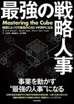

エムスリーテックブログ のフィード

7年間運用している主力アプリをリファクタリングしている話 Android編 1
1
エムスリーテックブログ
こんにちは、エンジニアリンググループ マルチデバイスチーム 新卒2年目の小林です。 先日、iOS版m3.comアプリのリファクタリングに関する記事が公開されましたが、Android版もリファクタリング...
4日前

エムスリーの人事組織とエンジニアリング組織で活躍するHRBPの話 29
エムスリーテックブログ
皆さん、こんにちは、こんばんは。エムスリーで執行役員VPoE兼PdM兼QA責任者兼デザイングループ担当役員をしている山崎です。エムスリーデジカルなど事業部門の責任者もやっています。 本日は、@iwas...
8日前
7年間運用している主力iOSアプリをリファクタリングしている話 2
エムスリーテックブログ
こんにちは、マルチデバイスチームでスマホアプリのエンジニアをしております星野です。 エムスリーでは医療従事者向け/一般の方向けに複数のアプリを開発していますが、その中でも特に主力のアプリである m3....
8日前

【Tech Talk 動画紹介】コード生成から考えるポインタの意味論
エムスリーテックブログ
新卒の永山です。 エムスリーでは隔週金曜日に Tech Talk という社内勉強会を実施しています。 エムスリー公式テックチャンネル 【M3 Tech Channel】 では過去の発表のアーカイブを公...
18日前
急に余ってしまった新型コロナワクチンを希望者にマッチングするサービスを作りました
エムスリーテックブログ
こんにちは、エムスリーエンジニアリンググループの福林 (@fukubaya) です。 今回は「新型コロナワクチン余剰通知システム」の実装、構築をAI・機械学習チームの丸尾 (@snowhork)と担...
20日前
エムスリーエンジニアリンググループの紹介資料を公開しました！
エムスリーテックブログ
こんにちは、電子カルテチーム 兼 採用チームの鳥山 (@to_lz1) です。 今回は、開発業務の傍ら準備してきたエムスリーのエンジニアリンググループ紹介資料 2022年版を公開しましたので、その紹介...
22日前
2018年に検討していたエンジニアリングG組織コンセプト案が発掘されました
エムスリーテックブログ
皆さんこんにちは、こんばんは。エムスリー執行役員VPoEをやりながらPdMもやっている山崎です（デザイン組織のリードと品質管理の責任者もやっています）。 はじめに エムスリーでは現在、アフターコロナ時...
24日前
【Tech Talk 動画紹介】個人開発サービスが2021年でユーザー数が10倍に成長した話
エムスリーテックブログ
こんにちは、BIRチームソフトウェアエンジニアの宮地です。 BIRはビジネスインテリジェンス&リサーチの略で、そこでは医療従事者の会員向けアンケートをベースに、製薬会社へのマーケティング支援を提供する...
25日前
【Tech Talk 動画紹介】Rubyの値はどう表現されるか (クイズもあるよ)
エムスリーテックブログ
新卒の永山です。 エムスリーでは隔週金曜日に Tech Talk という社内勉強会を実施しています。 エムスリー公式テックチャンネル 【M3 Tech Channel】 では過去の発表のアーカイブを公...
1ヶ月前
【Tech Talk 動画紹介】CronJobからJobをいい感じに作成する
エムスリーテックブログ
AI・機械学習チームで2021年新卒の北川(@kitagry)です。 あと一ヶ月で新卒２年目になるのかーと思いながら最近生きています。 エムスリーでは隔週金曜日に Tech Talk という社内勉強会...
1ヶ月前
【Tech Talk動画紹介】追悼、我が家のリサイクルスマートホーム機器
エムスリーテックブログ
スマホを初めとした電子機器に愛着が湧いて捨てられない私が、不要になった機器をスマートホーム機器として活用した話を紹介します。
1ヶ月前
QAチームでちょっとしたTips共有会をやってみた
エムスリーテックブログ
こんにちは！ エムスリーエンジニアリンググループ QAチームの城本（@yuki_shiro_823）です。QAチームで「ちょっとしたTips共有会」をやってみたので紹介します。 経緯 当社のQAチーム...
1ヶ月前
【Tech Talk 動画紹介】純粋関数型言語Cプリプロセッサで足し算をする
エムスリーテックブログ
新卒の永山です。 エムスリーでは隔週金曜日に Tech Talk という社内勉強会を実施しています。 エムスリー公式テックチャンネル 【M3 Tech Channel】 では過去の発表のアーカイブを公...
1ヶ月前
【Tech Talk 動画紹介】メタバースでプログラミング
エムスリーテックブログ
デジカルで開発をしている末永(@asmsuechan)です。新卒です。メタバースって単語をこの記事で初めて使いました。 0. 3行で VRヘッドセットを被ってプログラムを書きたい Immersedが仮...
1ヶ月前
【Tech Talk 動画紹介】 WSL2 を個人開発で活用している話
エムスリーテックブログ
エンジニアリンググループの山口 (@no_clock) です。 1 年半ほど前、社内 LT 会 (M3 Tech Talk) で「 WSL2 (Windows Subsystem for Linux ...
2ヶ月前
Cascade Model に適用する Bandit Algorithms の理論と実装
エムスリーテックブログ
Cascade Modelに多腕バンディットを適用したアルゴリズムを調べたので、Pythonによる実装とともに紹介していきます。
2ヶ月前
「Shell作れます」と言うために
エムスリーテックブログ
新卒の永山です。 昨今、SNSではなぜかシェルを作ることに関する言及が盛んに行われています。 そこで、本記事ではシェルの実装に関する理解を深めることを目的に簡単なシェル「nosh」*1 をインクリメン...
3ヶ月前
エムスリー執行役員VPoE兼PdMの山崎が、エンジニア、QA、デザイナー、プロダクトマネージャーにお薦めする良書7選
エムスリーテックブログ
こんにちは。最近、お掃除職人きよきよ*1というYouTuberにハマってしまい掃除に明け暮れ、近所のドラッグストアでドメストとパイプフィッシュの原材料が同じことなどを知って、ふむふむと楽しんでいるエム...
3ヶ月前
15年間続いているサービスをクラウドに移行しています
エムスリーテックブログ
この記事はエムスリー Advent Calendar 2021 の24日目の記事です。 エムスリーエンジニアリングG コンシューマチームの松原(@ma2ge)です。 2021年4月にチーム異動をして、...
3ヶ月前
エムスリーエンジニアリングフェローに河合 俊典さんが就任しました！
エムスリーテックブログ
人事の友永です。この度、河合 俊典さんにエムスリーエンジニアリングフェローに就任いただくことになりましたのでお知らせいたします。 エムスリーエンジニアリングフェローとは 在籍中または卒業後に顕著な活躍...
3ヶ月前
キーフレーズを抽出して遊ぶ
エムスリーテックブログ
AI・機械学習チームで2021年新卒の氏家です。 この記事はエムスリーAdvent Calendar 2021の23日目の記事です。 最近チームでスタンディング&ステッパーが流行っているのでその流れに...
3ヶ月前
GitLab上でよしなに自動実行してくれるTerraformのCIを目指して
エムスリーテックブログ
こんにちは、エムスリー エンジニアリンググループ の鳥山 (@to_lz1)です。製薬企業向けプラットフォームチームでチームSREとして活動しています。 この記事はエムスリー Advent Calen...
3ヶ月前
リスクを愉しむプロダクトマネジメント
エムスリーテックブログ
こんにちは、エムスリーエンジニアリンググループの岩田です。 本記事はエムスリー Advent Calendar 2021 の21日目の記事です。 今回はプロダクトマネジメントとリスク管理について私見を...
3ヶ月前
Spannerのノード数を時間帯ごとに変更する
エムスリーテックブログ
エムスリーエンジニアリングGの遠藤(@en_ken)です。 BIRというチームでアンケートシステム周りの開発を担当しています。 この記事はエムスリー Advent Calendar 2021 20日目...
3ヶ月前
Springで快適なDB疎通ユニットテストライフを送りたい
エムスリーテックブログ
こんにちは、エムスリー 製薬企業向けプラットフォームチームでエンジニアをやっている桑原です。Spring Frameworkが好きです。よろしくお願いします。 エムスリー Advent Calenda...
3ヶ月前
ユーザー投稿型ドキュメントのタイトル多様性を考慮した検索リランキングを試す
エムスリーテックブログ
エムスリーエンジニアリンググループ AI・機械学習チームでソフトウェアエンジニアをしている中村(po3rin) です。好きな言語はGo。情報検索系の話が好物です。今回は多様性を考慮したリランキング手法...
3ヶ月前
M1 Mac に古い ruby をインストールしてみたけど業務利用を諦めた話
エムスリーテックブログ
こんにちは、エムスリーエンジニアリンググループの園田です。本記事は エムスリー Advent Calendar 2021 の 18 日目の記事です。 最近、業務 PC の Mac が壊れたので、M1 ...
3ヶ月前
1つのキーだけのキーボードを作る
エムスリーテックブログ
エムスリー エンジニアリングGの岩本です。 会社ではiOS開発やサーバサイドの開発を担当していますが、家でDIY・IoT・スマホアプリなどを作るパパエンジニアやっています。 最近Kindleでコミック...
3ヶ月前
数量を機械学習で当てる モデル作成時の工夫と性能説明手法
エムスリーテックブログ
こんにちは。エムスリーエンジニアリンググループAI・機械学習チームの池嶋です。これは エムスリー Advent Calendar 2021 の16日目の記事です。 AIチームでは機械学習を使ったプロダ...
3ヶ月前
Elastic Cloudのインフラのスペックを忘れずに元に戻す
エムスリーテックブログ
エムスリーエンジニアリンググループ AI・機械学習チームの丸尾 (@snowhork) です。この記事は、エムスリー Advent Calendar 2021 の15日目の記事です。 エムスリーではA...
3ヶ月前